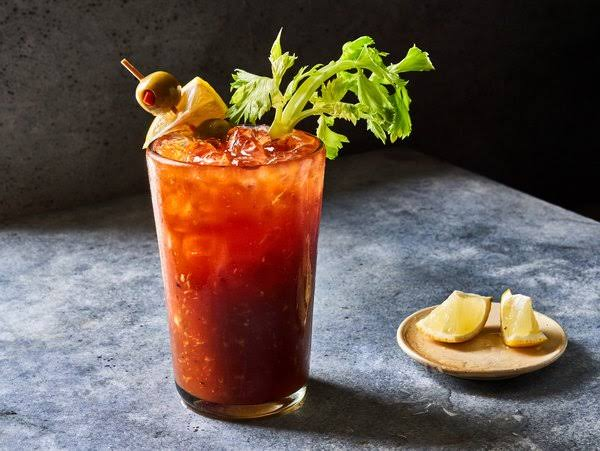

BLOODY MARY
Prep time:
10 mins
Yield:
2
Ingredients
1 1/2 ounces vodka (or peppered vodka for spice)
3 ounces tomato juice
1/2 ounce lemon juice
Dash or two Tabasco sauce
Dash or two Worcestershire sauce
Pinch of celery salt
Pinch of pepper
Dab of horseradish
Steps
Chill a cocktail shaker.
Add vodka, tomato juice, lemon juice, Tabasco sauce, and Worcestershire sauce.
Add salt, pepper, and horseradish to taste.
Pour into a chilled collins glass or beer mug.
Garnish with a lime slice or a celery stalk. Also preferred as garnishes: pickled green beans, okra pods, and garlic stuffed olives.